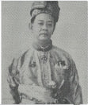
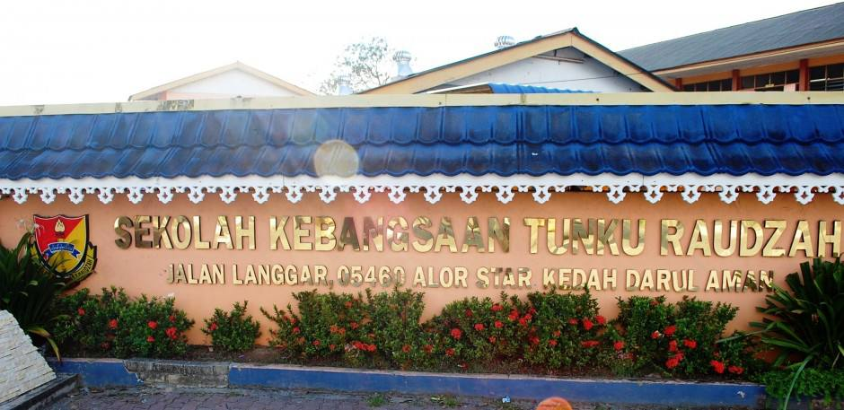
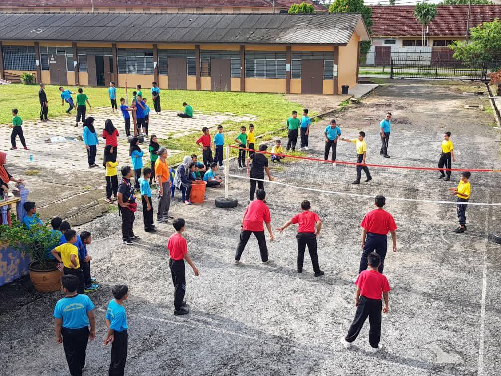
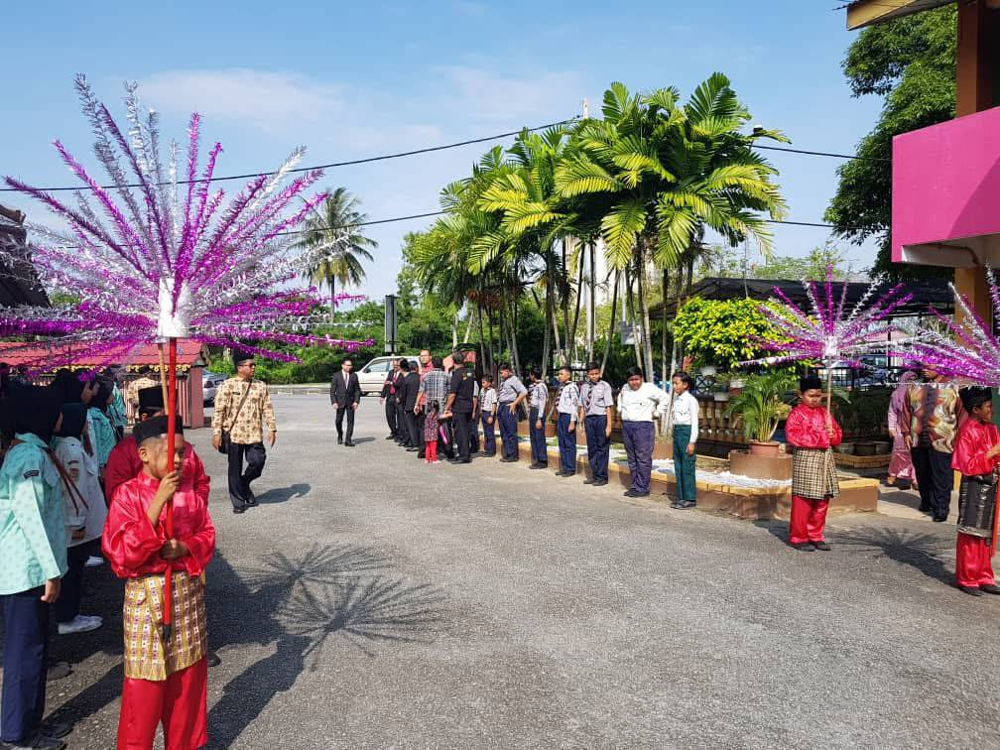
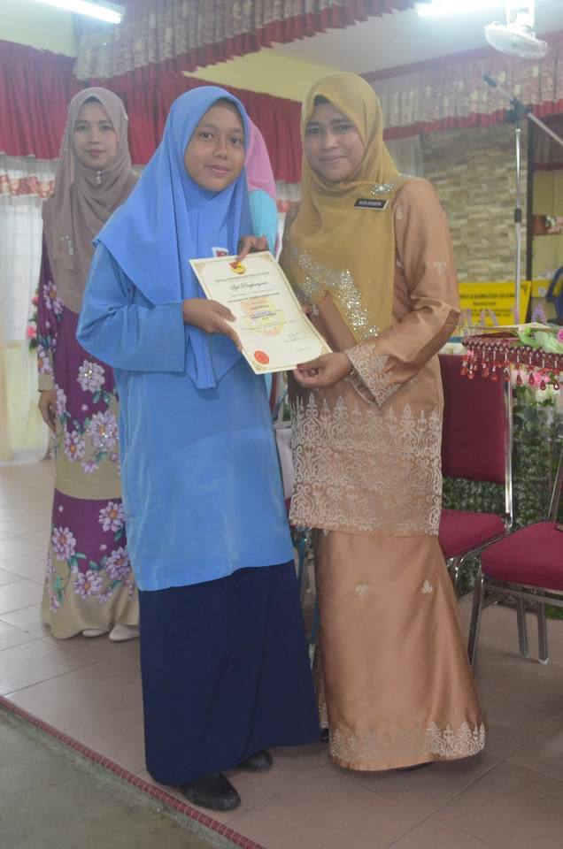
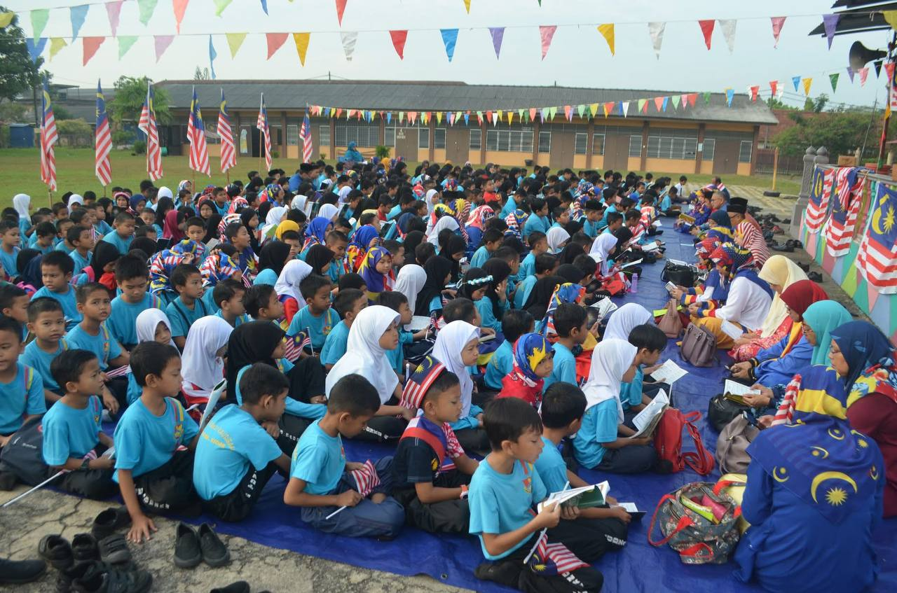
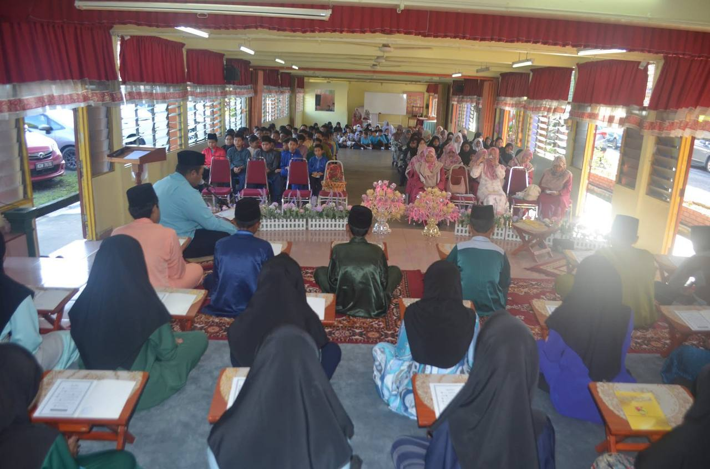

Sekolah Kebangsaan Tunku Raudzah was originally known as Sekolah Melayu Derga. It was established on 1 August 1915 in Derga, Kedah.
The idea to build this school came from the Kedah Education Commissioner, an English officer named E.A.G. The school has gone through many changes with different teachers and administrators helping to develop it.
In 1968, the school was officially renamed to Sekolah Kebangsaan Tunku Raudzah. This name was chosen to honour Tuanku Raja Puan Muda Kedah at that time.
The school was officially opened on 26 March 1975 by Duli Yang Teramat Mulia Tunku Haji Abdul Malik Ibni Almarhum Sultan Badlishah, who was the Acting Sultan of Kedah at that time.

Figure 1: Sultan Sir Badlishah ibni Almarhum Sultan Abdul Hamid Halim Shah Sultan of Kedah (27th ruler). He ruled Kedah from 1943 until 1958. He ascended the throne after the passing of his father, Sultan Abdul Hamid Halim Shah.
Today, the school continues to provide quality education and focuses on student development, discipline, and values. It remains an important school in the Derga area.





